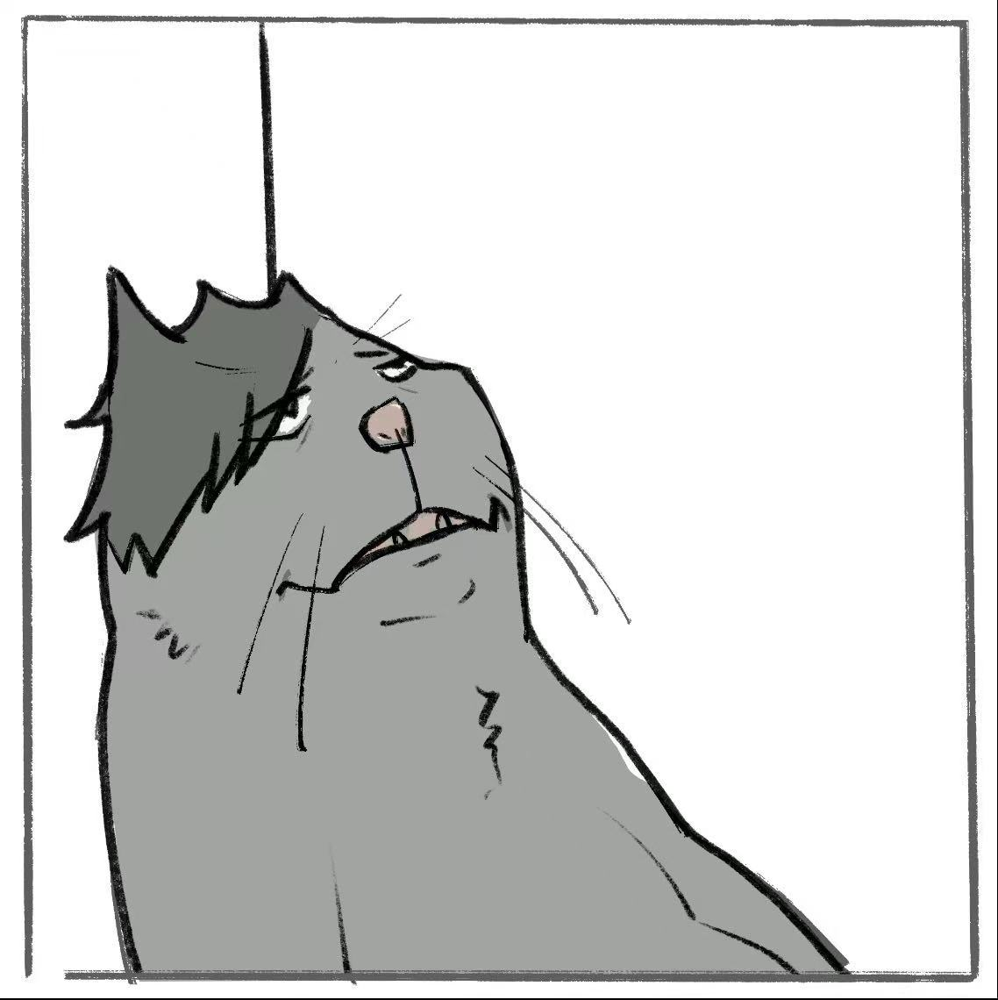

Mindao (ADO) Wang 王珉道 (ADO)
Earth Scientist & Researcher 地球科学研究者
MSc in Earth Science · 2022–2026 地球科学硕士 · 2022–2026
About个人简介
MSc student in Earth Science at the University of Oxford (St Anne's College), with research spanning geochemistry, climate modelling, ocean alkalinity, and planetary science. Passionate about understanding Earth's past and future through quantitative and computational methods.
牛津大学圣安妮学院地球科学硕士生，研究方向涵盖地球化学、气候建模、海洋碱度与行星科学。致力于通过定量与计算方法探索地球的过去与未来。
With cross-disciplinary experience in data science, climate modelling, and geochemical analysis, I aim to bridge the gap between Earth system science and real-world policy applications.
具备数据科学、气候建模和地球化学分析的跨学科经验，致力于将地球系统科学与现实政策应用相结合。
🎯 Steadily building Earth System Modelling (ESM) expertise alongside my geochemistry background — as I work toward a PhD bridging observational and modelling approaches to Earth system science. 🎯 在地球化学背景基础上，正持续积累地球系统模式（ESM）相关经验，致力于攻读一个能融合观测与建模方法的PhD项目。
Research科研经历
- Conducting a basin-scale assessment of modern ocean alkalinity trends using BATS, HOT, and GLODAP datasets.
- 利用BATS、HOT及GLODAP数据集，开展现代海洋碱度趋势的盆地尺度评估。
- Developed Python-based statistical frameworks to quantify long-term trends, accounting for autocorrelation and spatial heterogeneity.
- 构建基于Python的统计框架，量化长期趋势，并考虑自相关性与空间异质性。
- Evaluating detectability of anthropogenic alkalinity signals and distinguishing them from natural variability.
- 评估人为碱度信号的可探测性，并与自然变率区分。
- Utilized climate modeling to study organic matter decomposition and its impact on geochemical cycles during the Late Devonian.
- 利用气候模型研究晚泥盆世有机质分解及其对地球化学循环的影响。
- Connected carbon and lithium cycles by quantifying lithium fractionation through riverine and hydrothermal inputs/outputs.
- 通过量化河流和热液端元的锂分馏，建立碳循环与锂循环的联系。
- Advanced understanding of lithium isotopic systems as proxies for weathering and reverse weathering in ancient Earth systems.
- 深化了锂同位素体系作为古代地球风化与反向风化代用指标的认识。
- Assessed the potential for a new high-fiber white bread in the UK by evaluating projected yield changes in major global wheat-growing regions.
- 通过评估全球主要小麦产区的预期产量变化，评估英国新型高纤维白面包的开发潜力。
- Analyzed climate data using Python and R to evaluate how climate change may affect future yields of UK wheat and other key crops.
- 使用Python和R分析气候数据，评估气候变化对英国小麦及其他重要作物未来产量的影响。
- Projected impacts on land use and contributed to agricultural development strategies addressing climate challenges.
- 预测土地利用影响，并为应对气候挑战的农业发展战略提供支持。
- Conducted a review of climate model limitations and their impact on crop yield predictions in Western Europe.
- 开展综述研究，分析气候模型局限性对西欧作物产量预测的影响。
- Analyzed uncertainty propagation from Global and Regional Climate Models (GCMs/RCMs) and the Common Land Model (CML) into crop models.
- 分析不确定性如何从全球/区域气候模型（GCMs/RCMs）及通用陆面模型（CML）传递至作物模型。
- Explored the application of machine learning for climate downscaling, bias correction, and improving climate-crop model integration.
- 探索机器学习在气候降尺度、偏差校正及改进气候—作物模型集成方面的应用。
Publications学术发表
Skills技能
Awards荣誉奖项
Contact联系方式
Open to research collaborations, academic discussions, and new opportunities. 欢迎科研合作、学术交流，以及任何新的机会与可能。